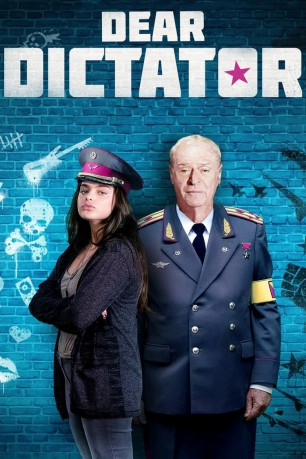

#9245 Dear Dictator
 
 IMDB-Wertung: 5.3 / 10
IMDB-Wertung: 5.3 / 10  Metascore: 44
Metascore: 44 
Der karibische Diktator General Anton Vincent (Michael Caine) muss aufgrund von politischen Turbulenzen aus seinem Inselstaat fliehen und sucht in einem amerikanischen Vorort Zuflucht bei der rebellischen Tatiana Mills (Odeya Rush), zu der der Diktator, als er noch an der Macht war, eine Brieffreundschaft unterhielt. In der Folge bringt der General der Schülerin bei, wie sie an ihrer Highschool eine Revolution startet…
BDRIP DUBBED
Jahr: 2017
Dauer: 90 Minuten
FSK:
Land: USA Studio: Cinedigm Entertainment GroupTonspuren:
Untertitel: Deutsch,
Auflösung: 1080p (1920x1040) Größe: 10444 MB
Genre: Komödie
Regisseur: Lisa Addario, Joe Syracuse
Drehbuch: Lisa Addario
Soundtrack: Sebastián Kauderer
Darsteller:
 Michael Caine als General Anton Vincent
Michael Caine als General Anton Vincent- Odeya Rush als Tatiana Mills
- Katie Holmes als Darlene Mills
 Seth Green als Dr. Charles Seaver
Seth Green als Dr. Charles Seaver Jason Biggs als Mr. Spines
Jason Biggs als Mr. Spines- Adrian Voo als Neighbor
- Jackson Beard als Denny
- Yvette Parish als Jaxi
- Jacob Grodnik als Teddy
- Jay Willick als Det. Diggs
- Rosemberg Salgado als Colonel
- Dana Joyce Schiller als Detective Spano
- Michael David Baldwin als Security Guard
- John Crosby als Newscaster
- Tony Guerrero als Rodriguez
- Evan Kelly als Reporter
- Arriebelle Kinney als Scared student
- Norio Nishimura als Manuel
- Joe W Nowland als Police Officer
- Natalie Pero als Daya
- Debra Phillips als Principal Harridan
- Jeremy Sykes als Mall Patron / Student
- Sarah Morgan Thompson als Student
- John Michael Weatherly als Megaphone Police Officer
- Kamryn Boyd als Girl with Phone / Student (uncredited)
- Marc Demeter als Police Officer (uncredited)
- Richard Keefner als Anton's Bodyguard General (uncredited)
- Anthony Vance Pierce als Anton's Guard (uncredited)
- Jordyn Cavros als Gigi
- Fish Myrr als Sarvia
- Hannah Joy Brown als Chivas
- Glenn D. Bridges als Vice Principal
- Anthony Bryant als Detective
- Andrew Conneff als Paramedic
- Evan Ellis als Newscaster #2
- Pamela Graham als Reporter
- Alexander Kovensky als Chubby Kid
- Belle Eseoghene Omabele als Girl with Glasses
- Philip Trossarello als Student
- Taylor Oldaker als Student (uncredited)
- Alyssa Vella als Student (uncredited)
Datei: X:\2017(A-F)\Dear Dictator (2017, FSK, 1920x1040).mkv seit 20.07.2018
Festplatte: HD 2017(A-Z)-2018(A-F)
 Es gibt insgesamt 152 Filme in der Gruppe '2017(A-F)'
Es gibt insgesamt 152 Filme in der Gruppe '2017(A-F)'